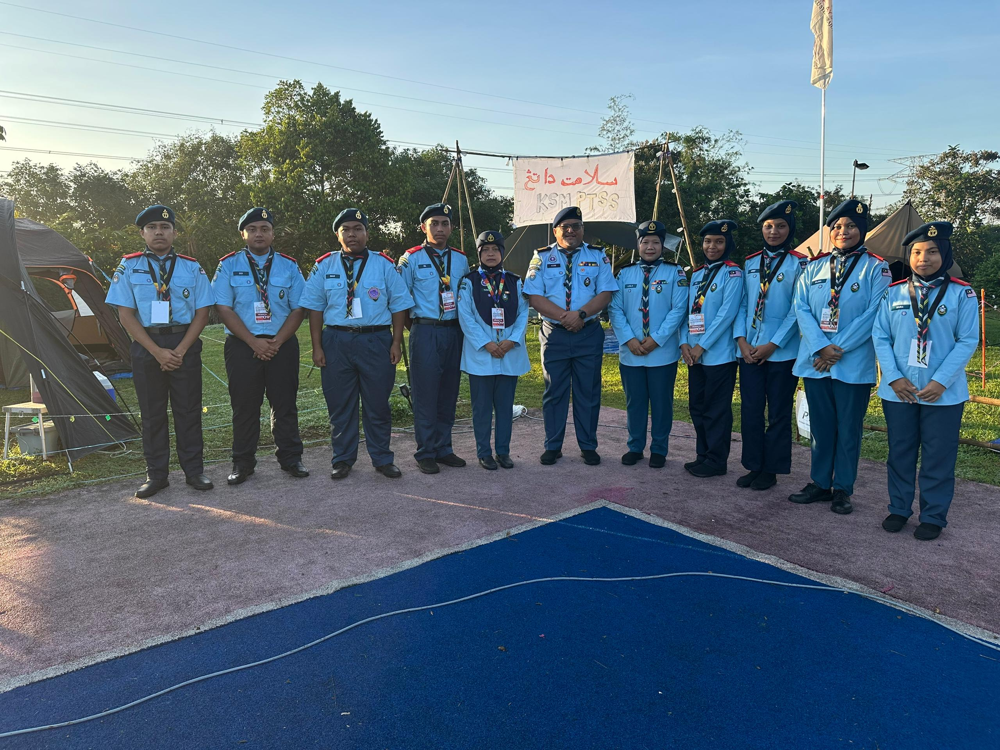
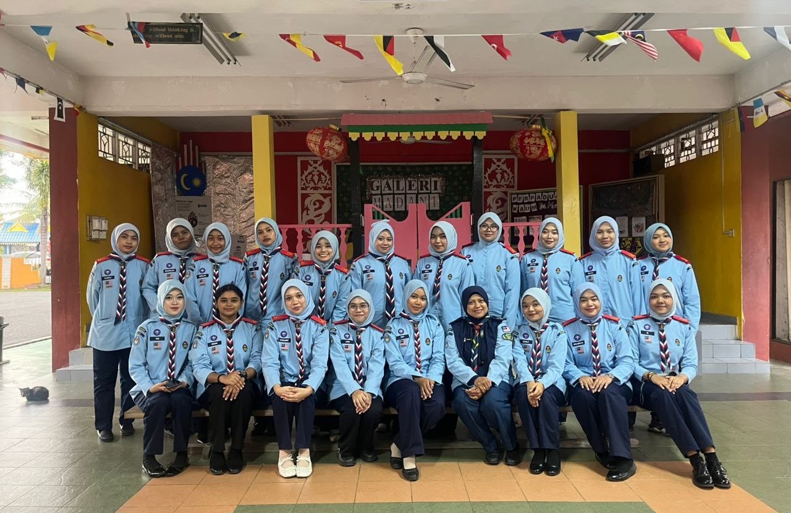
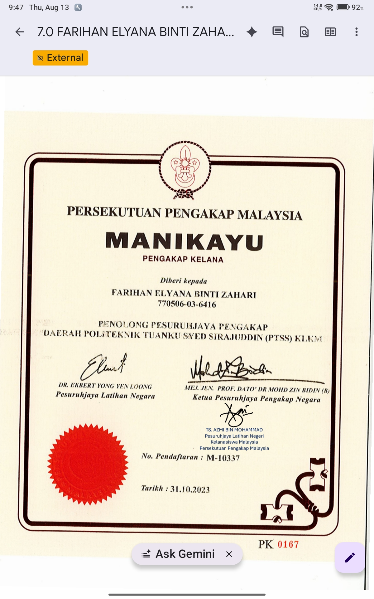

Penerbangan, Keselamatan & Meteorologi Udara
Terokai khazanah ilmu penerbangan khas untuk Pengakap Udara. Pelajari prinsip fizikal penerbangan, disiplin airmanship serta analisa cuaca atmosfera untuk menjadi ahli udara yang berpengetahuan tinggi.
Sejarah Penerbangan
Evolusi manusia menakluk angkasa lepas
Montgolfier Brothers
Penerbangan belon udara panas berkuasa manusia pertama di Paris, Perancis. Menggunakan udara panas untuk menghasilkan daya apungan.
Wright Brothers
Orville dan Wilbur Wright berjaya menerbangkan Wright Flyer - pesawat berenjin berkuasa dan terkawal pertama di Kitty Hawk.
Era Enjin Jet
Penerbangan pesawat jet pertama (Heinkel He 178) membuka era baharu penerbangan kelajuan tinggi merentas benua.
Penerbangan Supersonik & UAV
Perkembangan sistem navigasi GPS, pesawat tanpa pemandu (Drone/UAV), dan teknologi bahan komposit aerodinamik.
Kategori & Jenis Pesawat
Pesawat Sayap Kaku (Fixed-Wing)
Mempunyai sayap tetap yang menghasilkan daya angkat melalui kelajuan pergerakan ke hadapan. Contoh: Cessna, Boeing 737.
Pesawat Sayap Putar (Rotary-Wing)
Menghasilkan daya angkat daripada bilah rotor yang berputar. Boleh mendarat secara menegak. Contoh: Helikopter, Autogyro.
Glider (Luncur Udara)
Pesawat tanpa enjin yang bergantung kepada arus udara panas naik (thermal) dan reka bentuk aerodinamik untuk meluncur.
Lighter-Than-Air (LTA)
Pesawat yang terapung menggunakan gas kurang tumpat daripada udara seperti Helium atau Udara Panas. Contoh: Belon Udara Panas, Kapal Udara.
Anatomi Interaktif Pesawat Sayap Kaku
Klik titik komponen pada diagram untuk melihat fungsi kawalan penerbangan
Fuselage (Badan Pesawat)
Struktur utama pesawat yang memuatkan juruterbang, penumpang, dan kargo. Ia menghubungkan bahagian sayap dan ekor pesawat secara aerodinamik.
Perlindungan struktur, keselesaan kabin tekanan tinggi, dan pusat graviti pesawat.
4 Daya Penerbangan (Four Forces of Flight)
Keseimbangan antara daya fizikal semasa pesawat terbang di udara
1. Daya Angkat (Lift)
Daya ke atas yang dihasilkan oleh perbezaan tekanan udara di atas dan bawah sayap mengikut Prinsip Bernoulli. Menentang daya berat.
2. Daya Berat (Weight)
Daya tarikan graviti bumi yang menarik pesawat ke bawah. Bergantung kepada jisim keseluruhan pesawat, bahan api, dan muatan.
3. Daya Tolak (Thrust)
Daya ke hadapan yang dihasilkan oleh enjin (propeller/jet) mengikut Hukum Newton Ke-3. Menentang daya tahan.
4. Daya Tahan (Drag)
Rintangan geseran udara yang memperlahankan pergerakan pesawat ke hadapan. Dipengaruhi oleh bentuk aerodinamik dan kelajuan.
Apakah itu Airmanship?
Sikap, disiplin, kemahiran dan kesedaran situasi seorang ahli udara berhemah
Kesedaran Situasi (Situational Awareness)
Sentiasa peka terhadap keadaan sekeliling pesawat, instrumen, kedudukan cuaca, trafik udara lain, dan paras bahan api setiap masa.
Pencegahan F.O.D (Foreign Object Debris)
Disiplin membersahkan kawasan apron dan landasan daripada objek asing (batu, skru, atau sampah) yang boleh merosakkan enjin jet.
Pengurusan Risiko & Keputusan
Mampu membuat keputusan tepat semasa keadaan kecemasan tanpa emosi terburu-buru serta mengutamakan keselamatan nyawa.
Prosedur Sebelum Penerbangan (Walkaround Inspection)
Pemeriksaan fizikal wajib dilakukan juruterbang sebelum setiap pelepasan
Semakan Dokumen & Kebenaran
Memastikan Certificate of Airworthiness, lesen penerbangan, dan rekod penyelenggaraan pesawat adalah sah.
Pemeriksaan Kokpit (Internal Check)
Memastikan kunci pencetus OFF, brek diikat, paras bahan api dicatat, dan sistem avionik berfungsi.
Pemeriksaan Luaran (Exterior Walkaround)
Memeriksa Pitot Tube (tiada tersumbat), permukaan kawalan Aileron/Rudder (tiada kerosakan), dan tekanan tayar pendaratan.
Klasifikasi Awan & Impak Penerbangan
Cirrus (Ci)
Awan halus seperti bulu. Terdiri daripada kristal ais. Menandakan perubahan cuaca.
Altocumulus (Ac)
Awan berketul gumpalan putih/kelabu. Boleh menyebabkan pergolakan udara (turbulence).
Stratus (St)
Awan berlapis seragam seperti kabut tebal. Mengurangkan jarak penglihatan (low visibility).
Cumulonimbus (Cb)
Awan Ribut Petir Amat Bahaya! Mengandungi pusaran angin kuat, kilat, ais tebal, dan microburst.
Tekanan Udara & Altimeter
Fenomena Angin & Bahaya
- • Wind Shear: Perubahan mendadak dalam kelajuan/arah angin dalam jarak pendek.
- • Aircraft Icing: Titisan air membeku pada sayap, menambah berat dan merosakkan daya angkat.
- • Turbulence: Gangguan pergerakan udara akibat haba bumi atau angin merentas gunung.
Kuiz Kefahaman Pengakap Udara (30 Soalan)
Semua jawapan dan markah kuiz akan dirakamkan secara automatik ke Google Sheet "Latihan PU".
Google Sheet Pangkalan Data Keputusan: "Latihan PU"
ID: 14USN7yqmFpfMYTO0ZQ-1qOuAql8eKj3mi8iTUtT11pQ
Tetapan Webhook Apps Script (Opsional jika ingin menukar URL Webapp)
* Jika dibiarkan kosong, data tetap disediakan dan dipautkan ke Google Sheet Latihan PU.
Maklumat Peserta Kuiz
Keputusan Latihan Kefahaman
Penugasan Pemimpin
Papan pengurusan tugasan khas, rekod latihan, video pengajaran, dan dokumentasi Manikayu Pemimpin Pengakap Udara.
Tugasan 1


Senarai Nama & Dokumen Kelana Pengakap Udara
Pangkalan data rekod pendaftaran rasmi, senarai ahli Kelana Pengakap Udara, serta surat pemakluman rasmi di bawah penyeliaan Pn Farihan.
Folder Senarai Pelajar
Drive Folder Senarai Nama
Surat Pemakluman Penambahan Unit
Dokumen Rasmi Google Drive
Tugasan 2
Rakaman Pengajaran
VIDEO MEMPUNYAI MASALAH TEKNIKAL - VIDEO AKAN DI UPLOAD 16 OGOS 2026, AHAD
Video Pengakap Asas Penerbangan
Video pengajaran dan latihan KENAPA KAPAL TERBANG BOLEH TERBANG.
Koleksi pautan rekod video dan modul rakaman pengajaran PdP bagi amali penerbangan, airmanship, dan simulasi cuaca.
Tugasan 3
Keputusan Latihan Lencana Udara ("Latihan PU")
Analisis rekod dan markah pencapaian peserta kuiz latihan kefahaman 30 soalan yang dirakam secara automatik.
https://docs.google.com/spreadsheets/d/14USN7yqmFpfMYTO0ZQ-1qOuAql8eKj3mi8iTUtT11pQ/edit?usp=drivesdk
https://drive.google.com/drive/folders/1P1futc_yrbgVJFEqy7WdGQvV_CNmy3VO
Tugasan 4
Laporan Projek Belon Roket STEM
Koleksi pautan laporan rasmi Google Sites bagi pelaksanaan Projek STEM Aktiviti Belon Roket oleh ahli Pengakap Kelana PTSS.
1. Kelana Siswa PTSS
Laporan Aktiviti Belon Roket
2. Pengakap Liyah PTSS
Laporan Projek Roket Belon
3. Pengakap Nurain PTSS
Laporan Belon Roket
4. Qasrina Alyssa
Roket Belon
5. Nur Auni Balqis
Aktiviti Belon Roket
6. Pengakap Kelana Dayah
Aktiviti Belon Roket
Modul Rasmi
Sijil Manikayu Pemimpin Unit Pengakap Kelana
Dokumentasi rasmi dan paparan Sijil Manikayu Pemimpin Pn Farihan.

https://drive.google.com/file/d/1XXakiJ-CcjfZgJ6t0nmcMUCZhDMhWReJ/view?usp=drivesdk